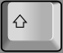

El procesador de textos¶
El procesador de textos¶
Operaciones básicas¶
Las operaciones básicas que podemos realizar con Writer son:
Abrir un documento¶
Para abrir un documento ya existente hay varias maneras. Lo más sencillo es ir a Archivo > Abrir en el menú y buscar el documento en la ubicación guardada.

Cerrar un documento¶
Si solo hay un documento abierto y deseamos cerrarlo, debemos ir a Archivo > Cerrar en el menú o hacer clic en la X en la barra de título. En Windows y Linux, cuando cierre el último documento, LibreOffice se cerrará por completo.
Nuevo documento¶
Si deseamos crear un nuevo documento, debemos ir a Archivo > Nuevo > Documento de texto en el menú o hacer clic en el icono Nuevo de la barra de herramientas Estándar.
Guardar un documento¶
Podemos guardar un documento usamos Guardar como que guarda el documento con el nombre indicado y en la ubicación especificada.
También se puede usar el icono de la barra del menú.
Observamos que tras guardar el documento el título cambia de
Insertar caracteres especiales¶
Los caracteres especiales son caracteres extendidos incluidos en los tipos de letra y que normalmente no se encuentran en el teclado, por ejemplo, 춸 칝 칞 켸 칬 칮 춱
Para insertar uno o más caracteres especiales, coloca el cursor en la posición donde deseas que aparezcan los caracteres.
Haz clic en el icono de Caracteres especiales en la barra de herramientas Estánda
Actividad
📝 AA2.2 Manejo caracteres especiales¶
(C.ESP2 / CE2.3 / IC1-3p)
- Abre LibreOffice Writer y escribe el siguiente texto
- Guarda el documento como "AA2.2.odt"
Acentos y caracteres especiales
ACENTOS: Para escribir un acento es necesario pulsar primero la tecla de acento y después pulsar la vocal que queremos escribir.
CARACTERES ESPECIALES: Para escribir los caracteres que se encuentran encima de los números es necesario mantener presionada la tecla shift  y después pulsar la tecla de número . Para escribir los caracteres que se encuentran a la derecha de los números es necesario mantener presionada la tecla Alt Gr y después pulsar la tecla de número .
Actividad
📝 AA2.3 Manejo de caracteres especiales II¶
(C.ESP2 / CE2.3 / IC1-3p)
- Abre LibreOffice Writer y escribe el siguiente texto:
- Guarda el documento como "AA2.4.pdf"
Caracteres especiales y mayúsculas
CARACTERES ESPECIALES: Para escribir los caracteres que se encuentran encima de los números es necesario mantener presionada la tecla shift y después pulsar la tecla de número . Para escribir los caracteres que se encuentran a la derecha de los números es necesario mantener presionada la tecla Alt Gr y después pulsar la tecla de número .
MAYÚSCULAS: Para escribir mucho texto en mayúsculas se utiliza la tecla de bloqueo de mayúsculas . Al pulsar la tecla, el teclado escribe todo en mayúsculas. Al volver a pulsar la tecla el teclado escribe todo en minúsculas. Para escribir una sola letra en mayúsculas se utiliza la tecla de mayúsculas o también llamada tecla de shift . Si el teclado está en modo de mayúsculas, al pulsar la tecla shift escribirá en minúsculas.
DIÉRESIS: Para escribir una diéresis (ü) hay que mantener presionada la tecla mientras se pulsa la tecla de diéresis . A continuación se presiona la tecla U y saldrá en la pantalla la letra con diéresis ü.
Exportar a PDF¶
Podemos guardar el documento en otros formatos como PDF mediante la opción del menú.
Deshacer y rehacer cambios¶
Para deshacer el cambio más reciente en un documento, pulsa Ctrl+Z, o elije Edición > Deshacer en el menú o haz clic en el icono Deshacer en la barra de herramientas Estándar.
Para obtener una lista de todos los cambios que se pueden deshacer, haz clic en el pequeño triángulo situado a la derecha del icono Deshacer de la barra de herramientas Estándar. Podremos seleccionar varios cambios secuenciales en la lista y deshacerlos al mismo tiempo.
Después de deshacer los cambios, se activa la función de Rehacer se activa. Para restaurar un cambio deshecho seleccionamos Edición > Rehacer o pulsamos Ctrl+Y o hacemos clic en el icono Rehacer en la barra de herramientas Estándar. Al igual que con Deshacer, haz clic en el pequeño triángulo hacia abajo para obtener una lista de los cambios que se pueden restaurar.
Buscar y reemplazar texto¶
Writer te da la opción de encontrar texto dentro de un documento.
Ve a Editar > Buscar y Reemplazar en la barra de menú o haz clic en el botón Buscar y reemplazar en la barra de herramientas Buscar.
Actividad
📝 AA2.4 Manejo caracteres especiales II¶
(C.ESP2 / CE2.3 / IC1-3p)
- Abre LibreOffice Writer y escribe el siguiente texto:
- Reemplaza la palabra punto por cambio usando el diálogo de Buscar y Reemplazar. Adjunta captura de pantalla del proceso.
- Cambia el factor de escala en la parte inferior derecha de la ventana, a 160% pulsando el botón - o el botón +.Adjunta captura de pantalla del proceso.
- Selecciona el último párrafo.Adjunta captura de pantalla del proceso.
- Guarda el documento como "AA2.3.docx"
Seleccionar texto¶
Seleccionar texto en Writer es similar a seleccionar texto en otras aplicaciones. Puedes deslizar el cursor del ratón sobre el texto o usar varios clics para seleccionar una palabra (doble clic), oración (triple clic) o párrafo (cuádruple clic)
Para seleccionar elementos no consecutivos: 1. Selecciona el primer fragmento de texto. 2. Pulsa Mayús+F8 para habilitar el modo de Selección de añadido. 3. Usa las teclas de flecha para moverte al comienzo del siguiente fragmento de texto que se seleccionará. 4. Manten pulsada la tecla Mayús y seleccione el siguiente fragmento de texto. 5. Repite tantas veces como sea necesario.
Cortar, copiar y pegar texto¶
Cortar y copiar texto en Writer es similar a cortar y copiar texto en otras aplicaciones. Puedes copiar o mover texto dentro de un documento o entre documentos, arrastrándolo o usando las entradas del menú, íconos o atajos de teclado para selecciones. También puedes copiar texto de otras fuentes, como páginas web y pegarlo en un documento de Writer.
- Para mover (arrastrar y soltar) el texto seleccionado con el ratón, arrástralo a la nueva ubicación y suéltalo; el cursor cambia de forma mientras se arrastra.
- Para copiar el texto seleccionado, manten pulsada la tecla Ctrl mientras arrastras. El texto conservará el formato que tenga en su origen.
- Para mover (cortar y pegar) el texto seleccionado, usa Ctrl+X para cortar el texto, inserta el cursor en el punto de pegado y usa Ctrl+V para pegar. Alternativamente, utiliza los botones Copiar/Pegar de la barra de herramientas estándar o las opciones del menú Editar.
- Cuando pegas texto, el resultado depende del tipo de letra del texto y de cómo lo pegas. Si haces clic en el botón Pegar, de la barra de herramientas Estándar, el texto pegado conservará su formato original (como negrita o cursiva). El texto pegado desde sitios web u otras fuentes puede contener marcos o tablas como parte del formato original.
Para eliminar el formato original y que el texto pegado tenga el mismo formato que el párrafo del punto de inserción, usa el menú Editar > Pegado especial.
Actividad
📝 AA2.5 Copiar y pegar¶
(C.ESP2 / CE2.3 / IC1-3p)
-
Ordenar alfabéticamente todos los nombres de la lista cortando cada uno de los nombres en orden alfabético y pegándolos al inicio de la lista.
- Diana
- Yolanda
- Nicolás
- Carlos
- Marta
- Álvaro
- Francisco
- Irene
- Javier
- Lorenzo
- Gabriela
Copiar y pegar
Empezamos por seleccionar el nombre Álvaro y lo cortamos manteniendo pulsada la tecla control y pulsando a continuación la tecla X .
También podemos seleccionar el nombre y pulsar el botón cortar en la barra de herramientas.
Otra forma de conseguir cortar es seleccionar el nombre y pinchar en el menú Editar... Cortar
Ahora colocamos el cursor al comienzo de la lista creamos una nueva línea presionando la tecla Return y pegamos el nombre que acabamos de cortar.
Para pegar el texto debemos mantener pulsada la tecla control y pulsar a continuación la tecla V .
También podemos pegar la palabra pinchando en el botón pegar .
Otra forma de pegar el nombre es pinchar en el menú Editar... Pegar
Debemos pulsar la tecla Return para separar las líneas de texto y crear una nueva línea.
El resultado será el siguiente.
Si en algún momento nos equivocamos y queremos deshacer alguna acción que hemos hecho mal se puede conseguir con el botón de la barra de herramientas.
Para volver atrás también se puede mantener presionada la tecla control tecla-control y pulsar la tecla Z tecla-z.
Para volver a rehacer la acción podemos pulsar el botón button-rehacer-accion de la barra de herramientas.
También podemos rehacer la acción manteniendo pulsada la tecla control tecla-control y pulsando la tecla Y tecla-4.
Continúa cortando y pegando nombres hasta que la lista esté ordenada alfabéticamente.
Solución ejercicio
{kind=link}
{kind=link}
{kind=link}
{kind=link}
Actividad
📝 AA2.6 Copiar y pegar II¶
(C.ESP2 / CE2.3 / IC1-3p)
- Abrimos un nuevo documento de texto en Writer.
- Buscamos información en Wikipedia sobre algún inventor, por ejemplo, Nikola Tesla.
-
Seleccionamos el primer párrafo de texto de Wikipedia y lo copiamos manteniendo pulsada la tecla control y pulsando a continuación la tecla C
-
Otra forma de copiar es seleccionar el texto, pinchar con el botón derecho del ratón y seleccionar copiar.
Copiar mediante el ratón
-
-
Una vez copiado el texto, volvemos a Writer y pegamos el texto manteniendo pulsada la tecla control y pulsando la tecla V .
- Otra forma de pegar el texto es pinchar con el botón derecho del ratón y seleccionar pegar.
-
Una vez pegado, veremos que el texto aparece con enlaces a otras páginas web. Los enlaces se verán en color azul subrayado.
Texto pegado con formato y links -
Para que no aparezcan los enlaces es necesario pegar el texto sin formato. Primero vamos a deshacer el pegado anterior con el botón deshacer o con la combinación de teclas control y la tecla Z .
-
Ahora seleccionamos en el menú Editar... Pegado especial... Pegar texto sin formato
Pegado especial -
Por último vamos a copiar la imagen de Tesla de la Wikipedia.
- Primero pinchamos con el botón derecho del ratón sobre la imagen y seleccionamos Copiar imagen.
- A continuación pinchamos en el comienzo del texto en Writer y pegamos la imagen con el botón derecho del ratón o pulsando la combinación de teclas control y pulsar a continuación la tecla V .
- El resultado será el siguiente.
Resultado ejercicio 🎬 Vídeo con la realización del ejercicio